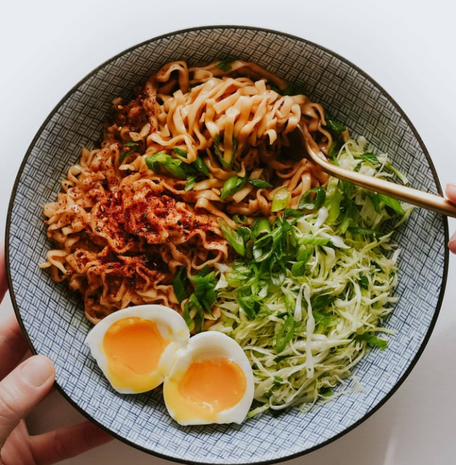

Home
Vegetarian recipe
Shortcut Sesame Butter Noodles

Up
Ingredients
- 1 (3.35 ounce) package saucy shortcut noodles
- 1 tablespoons butter
- 1–2 teaspoons honey
- 1/2 tablespoon toasted sesame oil (more to taste)
- a splash of water
- optional toppings: green onion, sesame seeds, chili crisp, togarashi
- 1/2 cup heavy cream
- 1/2 cup plain full-fat yogurt
- 1/2 teaspoon garam masala
- 1 1/2 teaspoons salt
- cilantro to garnish
- rice for serving
INSTRUCTION
-
Make the noodles: Cook the noodles according to package
directions, including adding in the little sauce packet.
-
Add the extras:Once prepared, toss hot noodles gently with the
butter, honey, and sesame oil. Taste and adjust to however you like
it. It should be silky when hot but it will get more sticky the longer
you wait – if it’s too sticky, add a bit of warm water to loosen it
which will emulsify and make it just a little creamy. It’s perfect.
-
Finish and serve:Finish with chili crisp, scallions, or some
kind of sesame or spicy sprinkle! Ideal little snack, or you can make
it more of a rounded out meal by serving with a fried egg and/or a
salad. Or ground chicken. Or shrimp. It’s the kind of thing that’s
good with everything.
Cozy Veggie Korma
Up
Ingredients
- 4 tablespoons butter
- 1 small onion, thinly sliced
- 2 large garlic cloves, thinly sliced
- one 1-inch piece ginger, thinly sliced
- 6 cardamom pods
- 1 tablespoon ground coriander
- 1 teaspoon each turmeric and cumin
- 1/2 teaspoon red pepper flakes
- 1/8 teaspoon ground cinnamon
- 2 gold potatoes
- 2 cups green beans
- 2 cups cubed paneer
- 1–2 red bell pepper
- 1 cup water
INSTRUCTION
-
Cook aromatics: Melt the butter in a large soup pot or skillet
over medium heat. Add onions, garlic, and ginger; sauté 5-7 minutes
until softened.
-
Add spices: Add cardamom, coriander, turmeric, cumin, red
pepper flakes, and cinnamon; sauté 2-3 minutes until fragrant.
-
Simmer the veggies: Add potatoes and water; cover and simmer
for 8-10 minutes. Add green beans and bell peppers; simmer uncovered
for 3-5 minutes, until all vegetables are tender. Add paneer
(optional).
-
Make it creamy: Bring the heat down to avoid curdling. When
cooled slightly, add cream, yogurt, salt, and garam masala. Add the
extra water if necessary to loosen it up.
-
Prepare to feast: Season with salt and pepper, serve over rice,
and top with cilantro. Creamy, comforting, and heavenly.